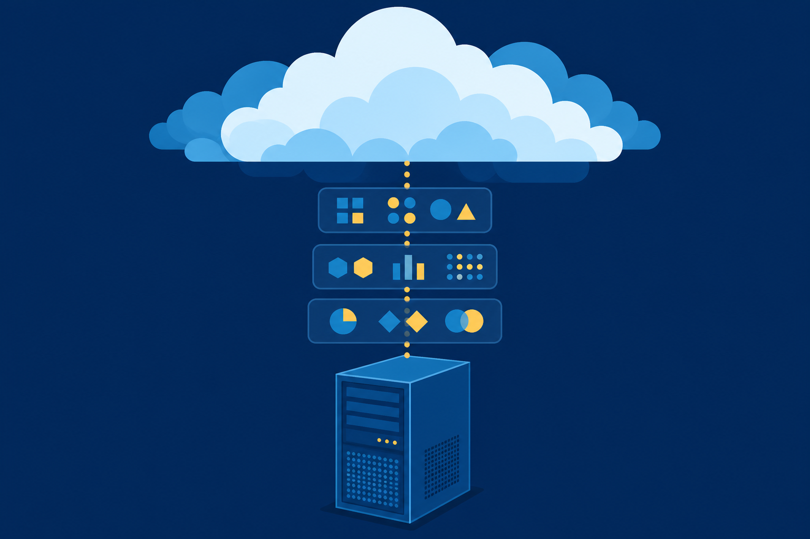
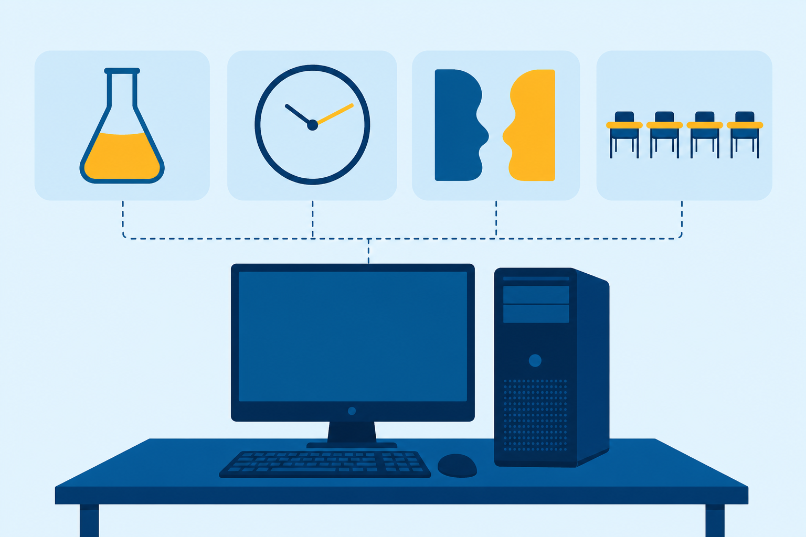
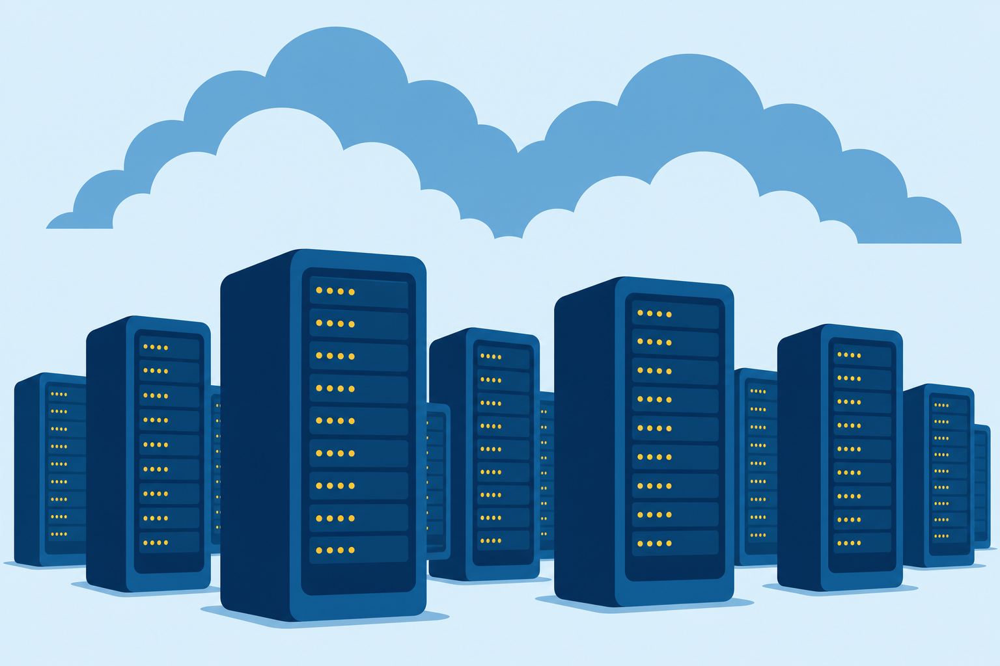

01
Compare
Type 1 and Type 2 hypervisors, and pick the right one for a job.

Hypervisors lift whole computers into software, and the cloud runs them at scale. Today, one workload makes the full climb.
Start here: A firm’s oldest PC runs one app nobody can retire. What are your options when that hardware finally dies?
Type 1 and Type 2 hypervisors, and pick the right one for a job.
the CPU, memory, storage, and network a virtualization host needs.
the cloud deployment and service model that fits a need.
A mid-sized law firm is moving to virtualized and cloud-based systems. One machine refuses to move: its app only runs on an older OS.
Gold follows this workload all class.
Each guest thinks it owns the machine. The hypervisor shares the hardware among all of them.
Installed as an application on top of the host OS.
Installed directly on the hardware.
Hyper-V looks like it runs on Windows. It installs to the hardware, and the host OS becomes a VM beside the others.
With a partner: The firm wants the case tracker VM on a paralegal’s everyday workstation. Type 1 or Type 2, and why?

Beyond the client: servers host extra network nodes as VMs, and desktop virtualization hands employees a VM desktop.
Every VM carries its own guest OS.
Containers share the host’s OS and stay light.
Both isolate workloads. The difference is how much each box has to carry.
Host memory · one pool
Every running VM claims its allocation from the same pool.
With a partner: The VM boots, then everything drags. The host’s disk has room to spare. Which resource do you audit first, and where?
Offline host, offline guests
The case tracker runs as a VM, but one workstation still hosts it alone. The cloud runs the same layers on a provider’s hardware, at datacenter scale.
Same stack, bigger building.

Multitenancy: many customers share one provider’s cloud.
One organization’s cloud, dedicated to it alone.
Organizations with shared needs run it together.
A private and a public cloud, joined.
The firm · Other tenants
Hosted private: a private cloud run inside a public provider, dedicated to a single customer.
Servers, storage, networking, load balancers.
Case tracker VM lands hereIaaS, plus tools to build and deploy apps, like databases.
The whole application, run in the cloud.
A full desktop, delivered as a service.
The provider runs it · You run it · Blocks, bottom to top: infrastructure, platform, application
Changes tracked across every platform, with commenting on some services.
Content replicated across multiple datacenters.
One box, one OS, one job.
Where it startedLifted into software on a Type 2 host.
Hardware retiredThe same VM on rented infrastructure.
Available and scalableThe firm’s goals, met: better hardware utilization, stronger security, flexible and scalable service.
What separates Type 1 from Type 2, and which fits an employee workstation?
A VM host goes offline. What happens to its guests, and which cloud characteristic answers it?
The firm rents servers, storage, and networking, then runs its own VM. Name the model.
Next step: Run the CertMaster labs: Explore Virtualization, then Create Virtual Hard Disks. Chapter 9 puts computing in your pocket: mobile devices.